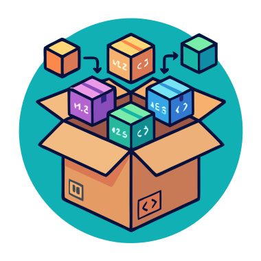

Olá, eu sou
Paulo Freitas
Software Developer & DevOps
Desenvolvedor de software apaixonado por DevOps e ferramentas open source. Criador do Tooark — um ecossistema de bibliotecas e ferramentas para desenvolvedores e DevOps.

Olá, eu sou
Software Developer & DevOps
Desenvolvedor de software apaixonado por DevOps e ferramentas open source. Criador do Tooark — um ecossistema de bibliotecas e ferramentas para desenvolvedores e DevOps.
Sou desenvolvedor de software com experiência em .NET/C#, Terraform, TypeScript, Node.js e práticas de DevOps. Trabalho no Grupo Jacto em Pompeia, SP — Brasil.
Fundei o projeto Tooark, onde mantenho bibliotecas open source, GitHub Actions, templates de CI/CD e ferramentas de observabilidade que já acumulam mais de 0 downloads nos pacotes NuGet.
C# / .NET • Node.js • TypeScript • Python • REST APIs
Docker • GitHub Actions • GitLab CI • Terraform • Kubernetes
OpenTelemetry • Monitoramento • Dashboards • Alertas
TypeScript • JavaScript • React • Angular • Vue • HTML/CSS
Trivy • SonarQube • Quality Gates • SAST/DAST

NuGet • NPM • ESLint Config • Bibliotecas Open Source
Ecossistema com pacotes, ferramentas e projetos open source para desenvolvedores e DevOps. Inclui 0 pacotes NuGet, GitHub Actions, templates CI/CD, libs de observabilidade e mais.
Biblioteca de ferramentas C# com validações, notificações, value objects, DTOs, entidades e utilitários. 0 downloads.
GitHub Action para criar resumos de scan de segurança de imagens Docker com Trivy.
Biblioteca Node.js para pré-configuração do OpenTelemetry em aplicações backend.
Configuração compartilhada de ESLint para projetos Node, React, Angular e Vue.
Imagens Docker base otimizadas para deploy de aplicações em ambientes de produção.
Quer trocar uma ideia, colaborar em um projeto ou só dar um oi? Me encontre nas redes abaixo.